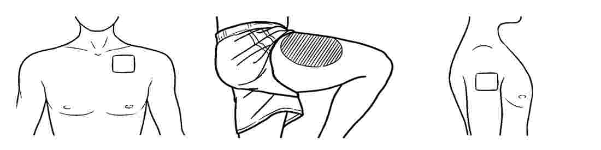
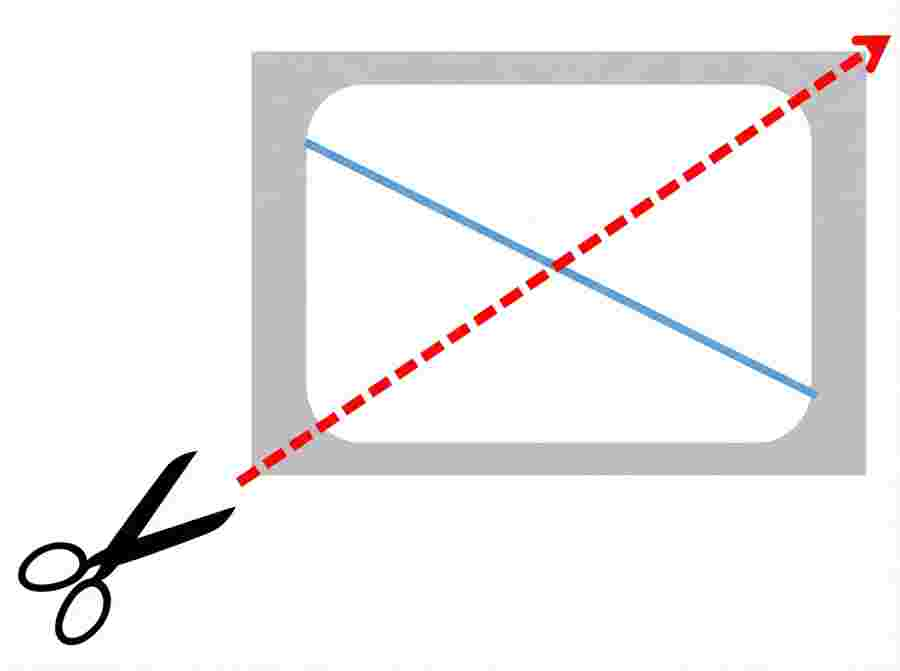

🩹 Tampalan Fentanyl
Panduan Penggunaan & Keselamatan
Tempat Penampalan
Berfungsi meredakan sakit kronik (kanser). Tampal pada kulit yang rata di Dada, Paha, atau Lengan.
- Cuci kulit dengan air bersih sahaja (keringkan).
- JANGAN cukur bulu! Gunting bulu sehingga pendek jika perlu.
- Elakkan sabun/minyak di kawasan tampalan.
Elakkan haba (mandi air panas, sauna, bantal pemanas) pada tempat tampalan kerana ia meningkatkan pembebasan ubat secara berlebihan.
Cara Penggunaan
Koyakkan paket. Lipat tampalan sedikit untuk mengeluarkan separuh pelapik. Jangan sentuh bahagian berpelekat.
Lekat bahagian terdedah pada kulit. Tarik baki pelapik dan lekat seluruh tampalan. Tekan dengan tapak tangan selama 30 saat.
Basuh tangan segera. Tulis tarikh/masa pada tampalan. Tukar setiap 72 jam (3 hari).
Jika Perlu Dos Separuh
Jika doktor arahkan dos separuh, gunting tampalan secara menyerong. JANGAN gunting mengikut garis lurus sedia ada.
Pembuangan Selamat
Tampalan terpakai masih mengandungi ubat dan boleh membawa maut jika tertelan atau terlekat pada kulit mereka.
- Lipat dua tampalan terpakai (bahagian melekat di dalam).
- Masukkan kembali ke dalam paket asal.
- Buang di tempat yang tidak boleh dicapai oleh kanak-kanak.
Side Effects & Help
Common: Drowsiness, nausea, constipation, skin irritation, dizziness.
- Slow or shallow breathing.
- Severe drowsiness or confusion.
- Inability to wake up or signs of overdose.
Tampalan Fentanyl
Panduan Penggunaan Pesakit
Elakkan haba (mandi air panas, bantal pemanas) di tapak tampalan.
Jauhkan daripada kanak-kanak/haiwan. Tampalan terpakai boleh membawa maut.
Dada, Paha, atau Lengan (Kulit bersih, kering, tidak berbulu). Gunting bulu, JANGAN cukur.
- Buka paket, kopek separuh pelapik.
- Tampal pada kulit, tarik baki pelapik.
- Tekan rata selama 30 saat.
- Basuh tangan. Tukar setiap 72 jam.
Gunting secara MENYERONG, JANGAN gunting mengikut garis lurus sedia ada.
Common: Drowsiness, nausea, constipation, dizziness.
Emergency: Contact doctor for slow breathing, severe drowsiness, confusion, or overdose signs.